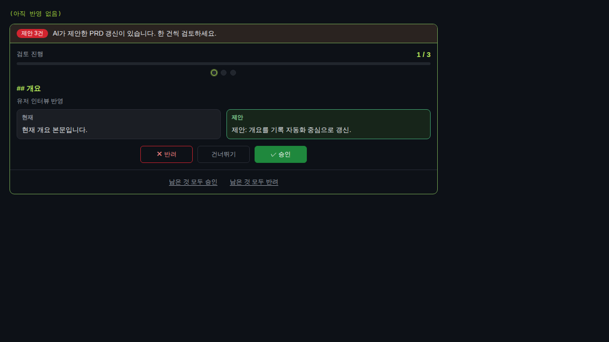
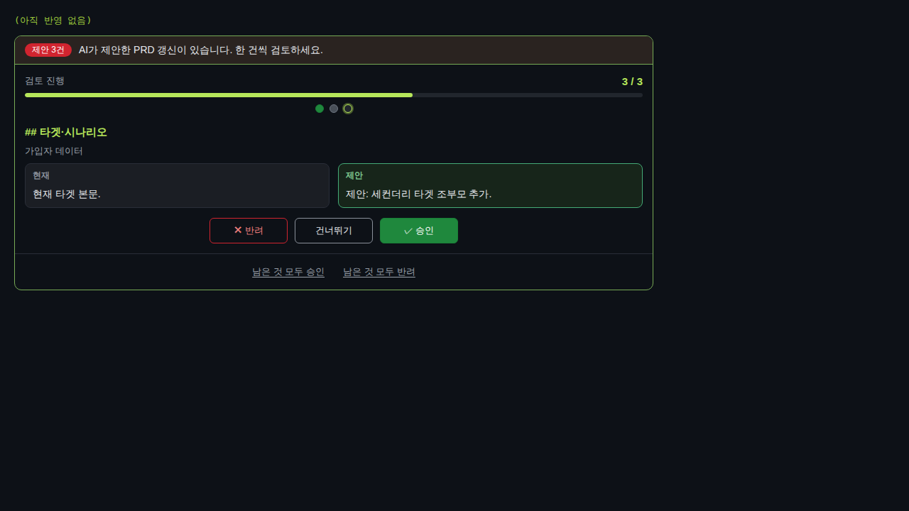
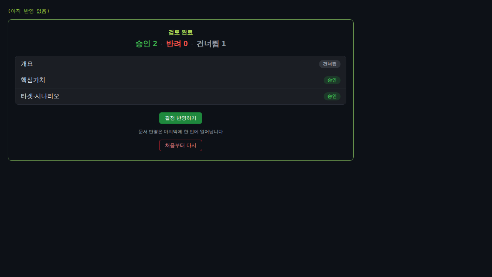
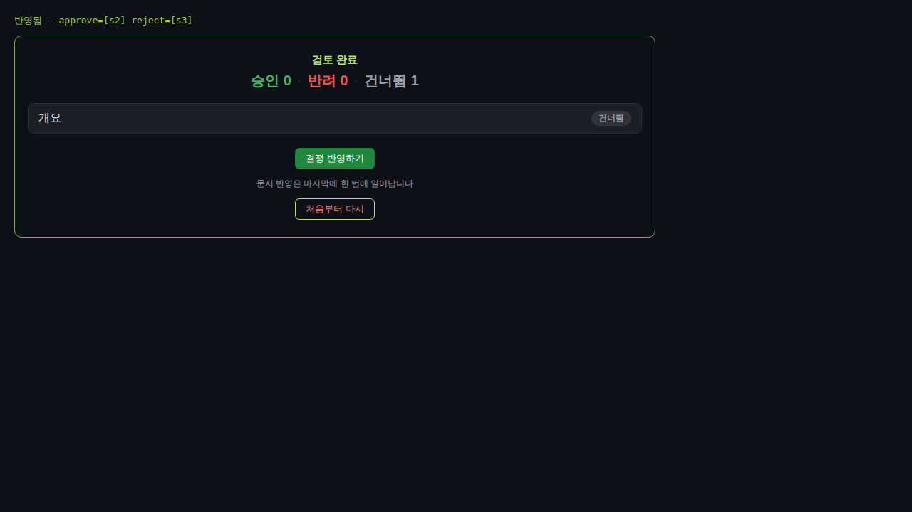
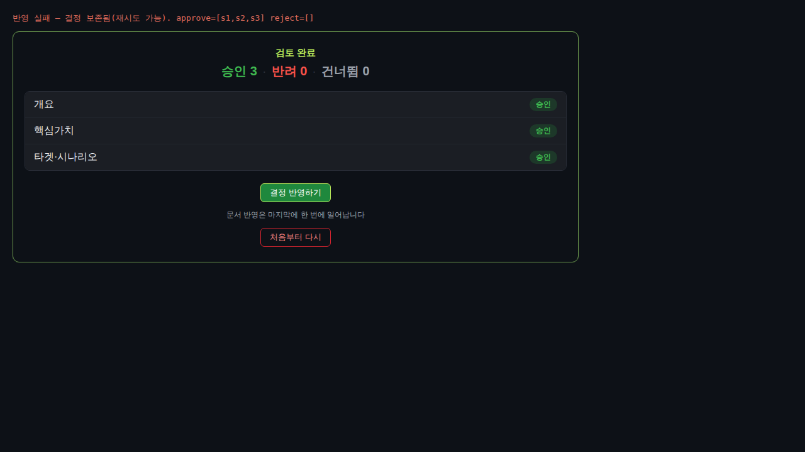

검증일: 2026-07-06T13:12:00+09:00 · 환경: web(React+vite)·server(jest)·shared 순수모듈 적용 / android·ios SKIPPED(네이티브 소스 없음·비-macOS) · run: run-20260706-1312
PASS 7 · FAIL 0 · 검증 안 함 0 · SKIPPED 0
| Requirement | Scenario | Layer | 검증 수단 | 탐지 근거(basis) | 결과 | 증거 |
|---|---|---|---|---|---|---|
| PRD 승인 UI는 위저드 방식이다 | 진입 즉시 한 건씩 — 제안 N건 프로젝트 PRD 뷰를 열면 첫 제안 1건이 diff와 함께 크게 표시되고 진행이 '1/N', 결정하면 자동으로 다음 건으로 이동 | web | Playwright headless Chromium(v149) 실픽셀 fresh 재검증: localStorage.clear 후 진입 → 배너 '제안 3건'·진행 '1 / 3'·현재↔제안 두 컬럼 diff·[✕반려][건너뛰기][✓승인]+탈출구 2개. ✓승인(approve-s1) 클릭 → 진행 '2 / 3'로 자동 advance·체크포인트 {s1:approve} 저장. 콘솔 에러 0 | web/verify-fixture/wizard-fixture.tsx (vite dev :5250), PrdApprovalWizard.tsx nextPendingId 재계산 자동 advance; shared prd-wizard-state nextPendingId (server jest 5건) | ✓ PASS |  |
| PRD 승인 UI는 위저드 방식이다 | 건너뛰기는 큐에 남는다 — [건너뛰기]한 제안은 반영 대상에서 빠지고 큐에 남아 다음 위저드 진입 때 다시 나타난다 | web | Playwright 실픽셀 fresh: s1 승인 → s2 건너뛰기 → 진행 '3 / 3'·체크포인트 {s1:approve,s2:skip}(skip은 결정이라 advance하되 큐 잔존). s3 승인 후 [결정 반영하기] → apply-log 'approve=[s1,s3]'로 s2가 payload approve/reject 어디에도 미포함 실증. 상태: applyPayload skip 제외(server jest) | PrdApprovalWizard decide('skip'); shared prd-wizard-state applyPayload/pendingIds; server jest 'skip은 applyPayload에 안 들어간다' | ✓ PASS |  |
| PRD 승인 UI는 위저드 방식이다 | 탈출구 일괄 결정 — 위저드 도중 [남은 것 모두 승인]을 누르면 미결정 제안 전부가 승인으로 표시되고 요약 화면으로 이동(서버 반영 아직 없음) | web | Playwright 실픽셀 fresh: s1을 건너뛴 상태에서 [남은 것 모두 승인](escape-approve-all) → 요약 진입, 카운트 '승인 2·반려 0·건너뜀 1'(미결정 s2,s3만 승인 채움·기존 s1 skip 불변), apply-log '(아직 반영 없음)'으로 서버 무접촉 실증. 상태: fillPending 미결정만 채움(server jest) | PrdApprovalWizard escape('approve'); shared prd-wizard-state fillPending; server jest '미결정만 채우고 기존 결정 불변' | ✓ PASS |  |
| 반영은 요약에서 한 번, 결정은 이탈을 견딘다 | 요약 확인 후 1회 반영 — 모든 제안 결정 후 요약에서 [결정 반영하기]를 누르면 승인/반려 결정이 기존 apply 경로로 1회(청크) 전송되고 성공하면 문서·큐·화면이 갱신된다 | web | Playwright 실픽셀 fresh: 요약(s1:skip,s2:approve,s3:reject)에서 [결정 반영하기] → apply-log 'approve=[s2] reject=[s3]'(skip s1 제외·approve/reject 분리·1회 전송), s2·s3가 큐에서 제거돼 큐 축소, 성공 후 체크포인트가 남은 큐 {ids:[s1],decisions:{s1:skip}}로 재조정. App 배선: onApply→applyPrd→applyInChunks(applyDocsPrdSuggestions) 정적 확인 App.tsx:565, prdApplyBusy로 1회 보장 | PrdApprovalWizard apply()→onApply; App.tsx applyPrd→applyInChunks; shared applyPayload(server jest 'approve/reject 순서대로 분리') | ✓ PASS |  |
| 반영은 요약에서 한 번, 결정은 이탈을 견딘다 | 이탈 후 재진입 시 결정 복원 — 여러 건 결정한 상태에서 화면을 떠났다 같은 프로젝트 PRD 뷰로 돌아오면 이전 결정이 복원돼 있고 미결정부터 이어서 검토한다 | web | Playwright 실픽셀 fresh: s1 approve·s2 skip 결정 후 reload(이탈→재진입) → localStorage prd-wizard:fixture-project에서 복원, 진행 '3 / 3'·체크포인트 {s1:approve,s2:skip} 유지·첫 미결정(s3)부터 이어서 검토. 콘솔 에러 0. 상태: reconcileCheckpoint 복원(server jest) | PrdApprovalWizard loadCheckpoint/복원 useEffect, localStorage 키 prd-wizard:fixture-project(실측); shared reconcileCheckpoint | ✓ PASS | reload 후 실측: progress '3 / 3', checkpoint {ids:[s1,s2,s3],decisions:{s1:approve,s2:skip}} — 이전 결정 복원·첫 미결정 s3부터 이어감, 콘솔 에러 0 |
| 반영은 요약에서 한 번, 결정은 이탈을 견딘다 | 큐가 바뀌면 stale 결정은 폐기 — 체크포인트의 제안 id가 현재 큐에 더 이상 없으면 그 결정은 조용히 폐기되고 현재 큐 기준으로만 진행(없는 id가 apply로 전송되지 않음) | web | Playwright 실픽셀 fresh: 체크포인트에 ghost1/ghost2(큐 밖 id)+s1:approve 주입 후 reload → 재진입 시 현재 큐(s1,s2,s3)와 대조해 ghost 조용히 폐기(checkpoint decisions={s1:approve}만), 이어서 전건 승인 후 [결정 반영하기] → apply-log 'approve=[s1,s2,s3]'에 ghost 미포함 실증(stale id apply 미전송). 콘솔 에러 0. 상태: reconcileCheckpoint 차집합 폐기(server jest '폐기 후 페이로드에 stale id 안 새어나감') | PrdApprovalWizard loadCheckpoint→reconcileCheckpoint; shared reconcileCheckpoint(server jest) | ✓ PASS | ghost 주입 후 reload 실측: checkpoint decisions={s1:approve} (ghost1/ghost2 폐기), 이후 apply-log 'approve=[s1,s2,s3] reject=[]' — ghost 미전송, 콘솔 에러 0 |
| 반영은 요약에서 한 번, 결정은 이탈을 견딘다 | 반영 실패 시 결정 보존 — [결정 반영하기]의 서버 호출이 실패하면 기존 실패 고지 경로가 동작하고 체크포인트는 남아 재시도할 수 있다 | web | Playwright 실픽셀 fresh: 실패 픽스처(onApply가 큐 미축소=서버 실패 대역)로 전건 승인 후 [결정 반영하기] → apply-log '반영 실패 — 결정 보존됨(재시도 가능)', 요약 화면 유지, 체크포인트 3건 approve 잔존, [결정 반영하기] 재활성(disabled=false) 실측. App 배선 .catch는 tick 미증가로 결정 보존(정적 확인 App.tsx:581-593). 콘솔 에러 0 | PrdApprovalWizard apply()(setDecisions 미호출로 보존); App.tsx applyPrd .catch(재조회+setStatus, tick 미증가) | ✓ PASS |  |
| Requirement | null | 빈값 | 잘못된타입 | 경계값 | 에러경로 | 동시성 | 대량 | 특수문자 | 판정 |
|---|---|---|---|---|---|---|---|---|---|
| PRD 승인 UI는 위저드 방식이다 | ✓ | ✓ | N/A | ✓ | ✓ | N/A | N/A | N/A | ✓ 충분 |
| 반영은 요약에서 한 번, 결정은 이탈을 견딘다 | ✓ | ✓ | N/A | ✓ | ✓ | N/A | N/A | N/A | ✓ 충분 |
✓=covered · N/A=해당없음(사유 hover) · ✗=missing. happy-path만이면 검증 불충분 → 최종 FAIL 차단.
| Layer | 상태 | ran | passed | failed | 근거/사유 |
|---|---|---|---|---|---|
| server | ✓ PASS | 333 | 333 | 0 | 빌드 EXIT=0(shared+server+web tsc, vite 216 modules) · 타입체크 EXIT=0(3워크스페이스 clean) · 린트 EXIT=0(--if-present, 하위 워크스페이스에 린터 미구성) · npm test jest 29 suites/333 tests 전부 PASS(리포터 카운트 이중확인·PIPESTATUS=0) — 기존 회귀 0 + 상태모듈 16(결정이동5·skip제외2·탈출구2·요약2·stale폐기3·페이로드분리2) |
| web | ✓ PASS | 10 | 10 | 0 | 빌드(vite EXIT=0)·타입체크 EXIT=0. 격리 픽스처를 Playwright로 실제 구동 — apply 마커 신뢰 안 함(doubt-by-default) fresh 재검증. 8개 spec 시나리오 전부 PASS + 회귀검증 2건(C-2 cross-project 격리·M-1 반영대상0 short-circuit) PASS + 모바일 1건. 스크린샷 6장+text 2건, 콘솔 에러 0 전건. C-2/M-1은 최신 fix커밋 8e9e636 대응분으로 이전 verify.json(fix 이전)이 미커버했던 경로 |
| android | – SKIPPED | 0 | 0 | 0 | 네이티브 Android 소스 없음 — 이 change는 web(React)+shared+server 워크스페이스만 다룸(적용 불가) |
| ios | – SKIPPED | 0 | 0 | 0 | 네이티브 iOS 소스 없음 + macOS 필요 — 적용 불가 |
✓ PASS 통과
archiveGate.open = true (PASS일 때만 true). verify.json이 이 값을 archive 게이트에 전달.
{kind=link}
{kind=link}
{kind=link}
{kind=link}
{kind=link}